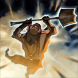

| Го 1на 1 |
Meepo — кор-герой с уникальной ультимативной способностью Divided We Stand, которая создаёт неидеальные копии Meepo. Клоны могут зарабатывать золото и опыт, использовать способности, но не могут иметь в инвентаре ничего, кроме ботинка, если он есть у главного Мипо. Центральная линия является предпочтительной для Meepo, так как герой нуждается в быстром получении опыта, чтобы полностью раскрыть свой потенциал. Divided We Stand Divided We Stand помогает Meepo быстро зарабатывать золото и опыт, что позволяет набирать преимущество уже на ранней стадии игры. Poof, после произнесения заклинания, телепортирует одного из Мипо к своему клону, нанося урон в начальной и конечной точке. Poof дает Meepo возможность быстро передвигаться по карте и эффективно фармить стаки крипов. При покупке Aghanim's Scepter даруется дополнительная способность Dig, которая позволяет Meepo зарываться в землю и восстанавливать здоровье. Благодаря Blink Dagger можно неожиданно нападать на противников и быстро их убивать, заранее подготавливая клонов к телепортации с помощью Poof. Ransack ворует здоровье врагов и излечивает другие копии Meepo, что позволяет не терять много здоровья в драке или при фарме большого количества стаков нейтральных крипов. Earthbind накладывает оцепенение на противников при попадании, благодаря чему можно удерживать цель долгое время на одном месте, а с талантом «-3 сек. перезарядки Earthbind» на 20-м — бесконечно. Power Treads является лучшим ботинком для Мипо, так как его можно переключать на разные атрибуты в разных ситуациях. Например, на интеллект перед использованием Poof, на силу, когда на вас напали и нужно отступить, или на ловкость, если вы просто фармите или атакуете. Ethereal Blade и Eye of Skadi станут прекрасным выбором для покупки, так как Meepo зависит от большого количества атрибутов. Также не лишним будет приобрести Scythe of Vyse, чтобы держать в контроле вражеского героя.
24 + 2,5
17 + 2,2
20 + 1,9
22-28
3
330
Ethereal
 Бросает в указанную область сеть, которая накладывает оцепенение на врагов.
Расход маны: 70/80/90/100
Перезарядка: 16/14/12/10 (Талант: 13/11/9/7)
Способность: направленная на область
Действует на: врагов
Длительность: 2
Радиус: 220
Дальность: 500/750/1000/1250
Точность: 0 (Талант: 100%)
Бросает в указанную область сеть, которая накладывает оцепенение на врагов.
Расход маны: 70/80/90/100
Перезарядка: 16/14/12/10 (Талант: 13/11/9/7)
Способность: направленная на область
Действует на: врагов
Длительность: 2
Радиус: 220
Дальность: 500/750/1000/1250
Точность: 0 (Талант: 100%)
Poof

Используя таинственную энергию земли, герой телепортируется к своем клону после 1,5 сек. произнесения заклинания, при этом нанося урон как в исходной, так и в конечной точке.
Расход маны: 80
Перезарядка: 12/10/8/6
Способность: направленная на юнита/направленная на точку
Действует на: себя/врагов
Тип урона: чистый
Дальность применения: глобальная
Урон: 40/60/80/100 (Талант: 70/90/110/130)
Радиус урона: 400
Ransack
Каждая атака крадёт здоровье у противника и излечивает остальные копии героя.
Способность: пассивная
Действует на: врагов/себя
Тип урона: чистый
Похищение здоровья (герои): 6/10/14/18 (Талант: 12/18/22/26)
Похищение здоровья (крипы): 3/5/7/9 (Талант: 11/13/15/17)
Dig
Герой закапывается в землю, благодаря чему следующие 4 сек. он неуязвим и его нельзя выбрать целью. Находясь в земле, герой постепенно восстанавливает 40% от максимального запаса здоровья. Нельзя применять при оцепенении.
Расход маны: 125
Перезарядка: 40
Способность: ненаправленная/прерываемая
Действует на: себя
Длительность: 4
Восстановление здоровья: 40%
Divided We Stand
Герой создаёт неидеальную и почти разумную копию самого себя. Эти клоны получают золото и опыт, а также перенимают способности, характеристики и уровень героя. Клоны не могут использовать какие-либо предметы, кроме сапог главного героя. Если хоть один из клонов погибнет, то умрут как все остальные клоны, так и сам герой. Также даёт герою и его копиям бонус к сопротивлению магии.
Расход маны: 0 (Aghanim's Shard: 75)
Перезарядка: 0 (Aghanim's Shard: 18/16/14)
Способность: пассивная/направленная на юнита (с Aghanim's Shard)
Действует на: себя/врагов (с Aghanim's Shard)
Тип урона: мгновенное убийство/магический (с Aghanim's Shard)
Количество клонов: 1/2/3 (Талант: 2/3/4)
Получение опыта клонами: 30%
Бонус к сопротивлению магии: 10%/15%/20%
|
|